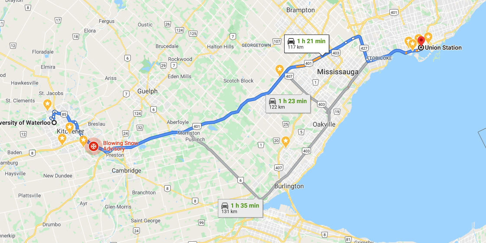
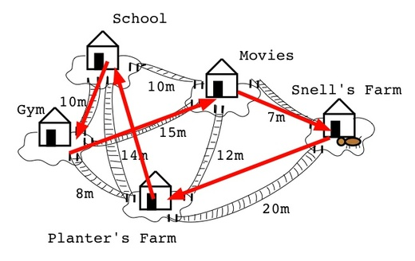
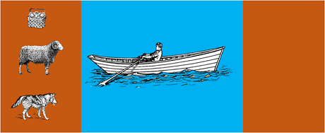

Where does search show up?


\( \lor (\neg e) \)


What is a search problem?
Five components:
- States
- Initial state
- Goal test
- Successor function
- Cost (optional)
Solution = path from start to goal.
Search graph
- States → nodes
- Actions → edges
- Goal: find a path S → G
Search tree & frontier
- Don't enumerate the graph
- Grow a tree from S, one path at a time
- Frontier = paths to expand next
Example: 8-puzzle
- State: 9 positions,
0= empty - Initial:
530,876,241 - Goal:
123,456,780 - Successor: slide adjacent tile into empty
- Cost: 1 per move
Quick check: successors
Q. Which is a successor of 530,876,241?
6 up.
Same 8-puzzle, different state
9 cells, 0–8
\((x_2, y_2), \ldots, (x_8, y_8)\)
9 (x,y) pairs — ~2× the space
Successor swaps empty tile's coords with a neighbour's.
Generic search algorithm
// Inputs: graph, start node s, goal test goal(n) function Search(graph, s, goal): frontier ← { <s> } while frontier is not empty: select and remove a path <n0, …, nk> from frontier if goal(nk): return <n0, …, nk> for each neighbour n of nk: add <n0, …, nk, n> to frontier return “no solution”
Trace: DFS
Push children alphabetically. Step numbers = order of expansion.
Tree parameters: \(b\), \(m\), \(d\)
\(b\) — branching factor
\(d\) — depth of shallowest goal
\(m\) — max depth of tree
DFS — properties
| Space | \(O(bm)\) |
|---|---|
| Time | \(O(b^m)\) |
| Complete? | No |
| Optimal? | No |
When to use DFS
Good fit
- Memory limited
- Many goals exist
- Deep solutions
Bad fit
- Cycles
- Shallow solutions
- Need optimality
Trace: BFS
Push children alphabetically. Multiple paths to P and B.
BFS — properties
| Space | \(O(b^d)\) |
|---|---|
| Time | \(O(b^d)\) |
| Complete? | Yes |
| Optimal? | Shallowest goal |
When to use BFS
Good fit
- Memory plentiful
- Want fewest arcs
- Cycles possible
Bad fit
- Deep solutions
- Large branching
- Graph generated on the fly
BFS vs DFS — Q1
Q. Memory is very limited.
BFS vs DFS — Q2
Q. All solutions are deep in the search tree.
BFS vs DFS — Q3
Q. The graph contains cycles.
BFS vs DFS — Q4
Q. The branching factor is huge or infinite.
BFS vs DFS — Q5
Q. You must find the shallowest goal.
BFS vs DFS — Q6
Q. All solutions are very shallow.
Trace: IDS
Same graph as BFS. Each iteration is depth-limited DFS.
IDS — properties
| Space | \(O(bd)\) |
|---|---|
| Time | \(O(b^d)\) |
| Complete? | Yes |
| Optimal? | Shallowest goal |
Summary: DFS vs BFS vs IDS
| DFS | BFS | IDS | |
|---|---|---|---|
| Frontier | Stack (LIFO) | Queue (FIFO) | Stack, repeated at deeper limits |
| Space | \(O(bm)\) | \(O(b^d)\) | \(O(bd)\) |
| Time | \(O(b^m)\) | \(O(b^d)\) | \(O(b^d)\) |
| Complete? | No | Yes | Yes |
| Optimal? | No | Shallowest goal | Shallowest goal |
\(b\) = branching factor; \(m\) = max depth of the search tree; \(d\) = depth of the shallowest goal.